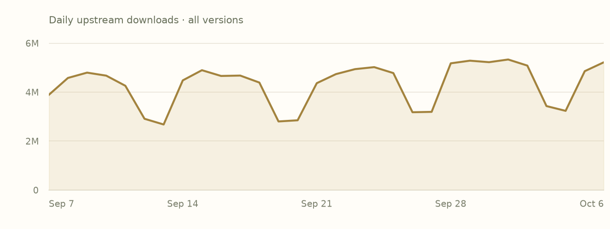

Overview
crates-io/serde_jsonSerde is a framework for serializing and deserializing Rust data structures efficiently and generically.
This is the adopted Rust edition. Use the author’s README below for API documentation and examples.
Read the upstream READMEFeatures
Declared activationDefault state includes transitively enabled local features. Follow a feature name to its declaration.
Swipe horizontally to see all columns.
| Feature | Default | Enables |
|---|---|---|
alloc | No |
|
arbitrary_precision | No | No additional feature or dependency edges declared. |
default | Yesdefault | |
float_roundtrip | No | No additional feature or dependency edges declared. |
indexmap | No |
|
preserve_order | No | |
raw_value | No | No additional feature or dependency edges declared. |
std | Yesdefault → std |
|
unbounded_depth | No | No additional feature or dependency edges declared. |
Plain names enable local features. dependency/feature forwards a dependency feature; dependency?/feature forwards only if that dependency is already enabled. Empty edges do not imply no effect in source.
Dependencies
Manifest requirementsVersion requirements and activation conditions, as recorded. These are declarations, not a resolved project graph.
Swipe horizontally to see all columns.
| Package | Requirement | Kind | Activation |
|---|---|---|---|
crates-io/indexmapAlias: indexmap | ^2.2.3Default features: not overridden | Optional | Not activated by defaults |
crates-io/itoaAlias: itoa | ^1.0Default features: not overridden | Required | Required by the manifest |
crates-io/memchrAlias: memchr | ^2Default features: disabled | Required | Required by the manifest |
crates-io/serdeAlias: serde | ^1.0.220Default features: disabled | Required | Required by the manifest when its target condition matchesTarget condition: cfg(any()) |
crates-io/serde_coreAlias: serde_core | ^1.0.220Default features: disabled | Required | Required by the manifest |
crates-io/zmijAlias: zmij | ^1.0Default features: not overridden | Required | Required by the manifest |
Dependents
Preview coverageDeclared relationships within these six package pages. Conditional edges may depend on features or targets.
No matching dependency declarations in this six-package preview.
Indexed builds
Bound assetsEach row groups compiled units with the same target, toolchain, profile and feature selection. Missing builds do not mean upstream incompatibility.
Swipe horizontally to see all columns.
| Target | Toolchain | Profile | Features | Units |
|---|---|---|---|---|
aarch64-apple-darwin | rustc 1.98.0 (88d9e12ae 2026-08-18) | debug | default, std | 1 |
Releases
Upstream & IncanUpstream release dates and recorded Incan availability. This preview displays the 1.0.151 manifest and builds; older entries link to their upstream records.
Swipe horizontally to see all columns.
| Version | Upstream released | Availability | Source |
|---|---|---|---|
1.0.151 | 2026-07-20 | Incan indexed | Release notes |
1.0.150 | 2026-05-21 | Upstream only | Release notes |
1.0.149 | 2026-01-06 | Incan indexed | Release notes |
1.0.148 | 2025-12-27 | Upstream only | Release notes |
1.0.147 | 2025-12-23 | Upstream only | Release notes |
1.0.146 | 2025-12-22 | Upstream only | Release notes |
1.0.145 | 2025-09-14 | Upstream only | Release notes |
1.0.144 | 2025-09-13 | Upstream only | Release notes |
Notes for 1.0.151
Author-provided, from the matching packaged changelog where available.
Matching release-note text was not found in the packaged source archive. Follow an available upstream source link.
Popularity
Snapshot · 2026-10-07Downloads are source-specific counts, not unique users or project installs. Both histories cover all versions.
crates.io downloads
30 complete UTC days
2026-09-07–2026-10-06 · crates.io data
View daily crates.io values
| UTC date | Downloads |
|---|---|
| 2026-09-07 | 3888619 |
| 2026-09-08 | 4580434 |
| 2026-09-09 | 4797328 |
| 2026-09-10 | 4674571 |
| 2026-09-11 | 4260094 |
| 2026-09-12 | 2912477 |
| 2026-09-13 | 2678925 |
| 2026-09-14 | 4481182 |
| 2026-09-15 | 4896555 |
| 2026-09-16 | 4661672 |
| 2026-09-17 | 4677439 |
| 2026-09-18 | 4392078 |
| 2026-09-19 | 2803409 |
| 2026-09-20 | 2850656 |
| 2026-09-21 | 4366852 |
| 2026-09-22 | 4736767 |
| 2026-09-23 | 4940260 |
| 2026-09-24 | 5022126 |
| 2026-09-25 | 4779393 |
| 2026-09-26 | 3179699 |
| 2026-09-27 | 3194870 |
| 2026-09-28 | 5177969 |
| 2026-09-29 | 5285707 |
| 2026-09-30 | 5224361 |
| 2026-10-01 | 5333808 |
| 2026-10-02 | 5085076 |
| 2026-10-03 | 3431349 |
| 2026-10-04 | 3236186 |
| 2026-10-05 | 4856880 |
| 2026-10-06 | 5221643 |
Incan registry downloads
GitHub Packages · all build tags
2026-09-08–2026-10-07 · 2026-10-07 is a partial UTC day · GitHub Packages data
View daily registry values
| UTC date | Downloads |
|---|---|
| 2026-09-08 | 0 |
| 2026-09-09 | 0 |
| 2026-09-10 | 0 |
| 2026-09-11 | 0 |
| 2026-09-12 | 0 |
| 2026-09-13 | 0 |
| 2026-09-14 | 0 |
| 2026-09-15 | 0 |
| 2026-09-16 | 0 |
| 2026-09-17 | 0 |
| 2026-09-18 | 0 |
| 2026-09-19 | 0 |
| 2026-09-20 | 0 |
| 2026-09-21 | 0 |
| 2026-09-22 | 0 |
| 2026-09-23 | 0 |
| 2026-09-24 | 0 |
| 2026-09-25 | 0 |
| 2026-09-26 | 0 |
| 2026-09-27 | 0 |
| 2026-09-28 | 0 |
| 2026-09-29 | 0 |
| 2026-09-30 | 0 |
| 2026-10-01 | 0 |
| 2026-10-02 | 0 |
| 2026-10-03 | 0 |
| 2026-10-04 | 0 |
| 2026-10-05 | 0 |
| 2026-10-06 | 0 |
| 2026-10-07 | 7 |
README
Author-providedFrom the checksum-verified upstream source archive. Cargo examples describe the upstream Rust library.
Serde JSON Build Status Latest Version
Serde is a framework for serializing and deserializing Rust data structures efficiently and generically.
[dependencies]
serde_json = "1.0"
You may be looking for:
- JSON API documentation
- Serde API documentation
- Detailed documentation about Serde
- Setting up
#[derive(Serialize, Deserialize)] - Release notes
JSON is a ubiquitous open-standard format that uses human-readable text to transmit data objects consisting of key-value pairs.
{
"name": "John Doe",
"age": 43,
"address": {
"street": "10 Downing Street",
"city": "London"
},
"phones": [
"+44 1234567",
"+44 2345678"
]
}
There are three common ways that you might find yourself needing to work with JSON data in Rust.
- As text data. An unprocessed string of JSON data that you receive on an HTTP endpoint, read from a file, or prepare to send to a remote server.
- As an untyped or loosely typed representation. Maybe you want to check that some JSON data is valid before passing it on, but without knowing the structure of what it contains. Or you want to do very basic manipulations like insert a key in a particular spot.
- As a strongly typed Rust data structure. When you expect all or most of your data to conform to a particular structure and want to get real work done without JSON's loosey-goosey nature tripping you up.
Serde JSON provides efficient, flexible, safe ways of converting data between each of these representations.
Operating on untyped JSON values
Any valid JSON data can be manipulated in the following recursive enum
representation. This data structure is serde_json::Value.
enum Value {
Null,
Bool(bool),
Number(Number),
String(String),
Array(Vec<Value>),
Object(Map<String, Value>),
}
A string of JSON data can be parsed into a serde_json::Value by the
serde_json::from_str function. There is also
from_slice for parsing from a byte slice &[u8] and
from_reader for parsing from any io::Read like a File or a
TCP stream.
<div align="right"> <a href="https://play.rust-lang.org/?edition=2018&gist=d69d8e3156d4bb81c4461b60b772ab72" target="_blank"> </a> </div>
use serde_json::{Result, Value};
fn untyped_example() -> Result<()> {
// Some JSON input data as a &str. Maybe this comes from the user.
let data = r#"
{
"name": "John Doe",
"age": 43,
"phones": [
"+44 1234567",
"+44 2345678"
]
}"#;
// Parse the string of data into serde_json::Value.
let v: Value = serde_json::from_str(data)?;
// Access parts of the data by indexing with square brackets.
println!("Please call {} at the number {}", v["name"], v["phones"][0]);
Ok(())
}
The result of square bracket indexing like v["name"] is a borrow of the data
at that index, so the type is &Value. A JSON map can be indexed with string
keys, while a JSON array can be indexed with integer keys. If the type of the
data is not right for the type with which it is being indexed, or if a map does
not contain the key being indexed, or if the index into a vector is out of
bounds, the returned element is Value::Null.
When a Value is printed, it is printed as a JSON string. So in the code above,
the output looks like Please call "John Doe" at the number "+44 1234567". The
quotation marks appear because v["name"] is a &Value containing a JSON
string and its JSON representation is "John Doe". Printing as a plain string
without quotation marks involves converting from a JSON string to a Rust string
with as_str() or avoiding the use of Value as described in the following
section.
The Value representation is sufficient for very basic tasks but can be tedious
to work with for anything more significant. Error handling is verbose to
implement correctly, for example imagine trying to detect the presence of
unrecognized fields in the input data. The compiler is powerless to help you
when you make a mistake, for example imagine typoing v["name"] as v["nmae"]
in one of the dozens of places it is used in your code.
Parsing JSON as strongly typed data structures
Serde provides a powerful way of mapping JSON data into Rust data structures largely automatically.
<div align="right"> <a href="https://play.rust-lang.org/?edition=2018&gist=15cfab66d38ff8a15a9cf1d8d897ac68" target="_blank"> </a> </div>
use serde::{Deserialize, Serialize};
use serde_json::Result;
#[derive(Serialize, Deserialize)]
struct Person {
name: String,
age: u8,
phones: Vec<String>,
}
fn typed_example() -> Result<()> {
// Some JSON input data as a &str. Maybe this comes from the user.
let data = r#"
{
"name": "John Doe",
"age": 43,
"phones": [
"+44 1234567",
"+44 2345678"
]
}"#;
// Parse the string of data into a Person object. This is exactly the
// same function as the one that produced serde_json::Value above, but
// now we are asking it for a Person as output.
let p: Person = serde_json::from_str(data)?;
// Do things just like with any other Rust data structure.
println!("Please call {} at the number {}", p.name, p.phones[0]);
Ok(())
}
This is the same serde_json::from_str function as before, but this time we
assign the return value to a variable of type Person so Serde will
automatically interpret the input data as a Person and produce informative
error messages if the layout does not conform to what a Person is expected to
look like.
Any type that implements Serde's Deserialize trait can be deserialized this
way. This includes built-in Rust standard library types like Vec<T> and
HashMap<K, V>, as well as any structs or enums annotated with
#[derive(Deserialize)].
Once we have p of type Person, our IDE and the Rust compiler can help us use
it correctly like they do for any other Rust code. The IDE can autocomplete
field names to prevent typos, which was impossible in the serde_json::Value
representation. And the Rust compiler can check that when we write
p.phones[0], then p.phones is guaranteed to be a Vec<String> so indexing
into it makes sense and produces a String.
The necessary setup for using Serde's derive macros is explained on the Using derive page of the Serde site.
Constructing JSON values
Serde JSON provides a json! macro to build serde_json::Value
objects with very natural JSON syntax.
<div align="right"> <a href="https://play.rust-lang.org/?edition=2018&gist=6ccafad431d72b62e77cc34c8e879b24" target="_blank"> </a> </div>
use serde_json::json;
fn main() {
// The type of `john` is `serde_json::Value`
let john = json!({
"name": "John Doe",
"age": 43,
"phones": [
"+44 1234567",
"+44 2345678"
]
});
println!("first phone number: {}", john["phones"][0]);
// Convert to a string of JSON and print it out
println!("{}", john.to_string());
}
The Value::to_string() function converts a serde_json::Value into a String
of JSON text.
One neat thing about the json! macro is that variables and expressions can be
interpolated directly into the JSON value as you are building it. Serde will
check at compile time that the value you are interpolating is able to be
represented as JSON.
<div align="right"> <a href="https://play.rust-lang.org/?edition=2018&gist=f9101a6e61dfc9e02c6a67f315ed24f2" target="_blank"> </a> </div>
let full_name = "John Doe";
let age_last_year = 42;
// The type of `john` is `serde_json::Value`
let john = json!({
"name": full_name,
"age": age_last_year + 1,
"phones": [
format!("+44 {}", random_phone())
]
});
This is amazingly convenient, but we have the problem we had before with
Value: the IDE and Rust compiler cannot help us if we get it wrong. Serde JSON
provides a better way of serializing strongly-typed data structures into JSON
text.
Creating JSON by serializing data structures
A data structure can be converted to a JSON string by
serde_json::to_string. There is also
serde_json::to_vec which serializes to a Vec<u8> and
serde_json::to_writer which serializes to any io::Write
such as a File or a TCP stream.
<div align="right"> <a href="https://play.rust-lang.org/?edition=2018&gist=3472242a08ed2ff88a944f2a2283b0ee" target="_blank"> </a> </div>
use serde::{Deserialize, Serialize};
use serde_json::Result;
#[derive(Serialize, Deserialize)]
struct Address {
street: String,
city: String,
}
fn print_an_address() -> Result<()> {
// Some data structure.
let address = Address {
street: "10 Downing Street".to_owned(),
city: "London".to_owned(),
};
// Serialize it to a JSON string.
let j = serde_json::to_string(&address)?;
// Print, write to a file, or send to an HTTP server.
println!("{}", j);
Ok(())
}
Any type that implements Serde's Serialize trait can be serialized this way.
This includes built-in Rust standard library types like Vec<T> and HashMap<K, V>, as well as any structs or enums annotated with #[derive(Serialize)].
Performance
It is fast. You should expect in the ballpark of 500 to 1000 megabytes per second deserialization and 600 to 900 megabytes per second serialization, depending on the characteristics of your data. This is competitive with the fastest C and C++ JSON libraries or even 30% faster for many use cases. Benchmarks live in the serde-rs/json-benchmark repo.
Getting help
Serde is one of the most widely used Rust libraries, so any place that Rustaceans congregate will be able to help you out. For chat, consider trying the #rust-questions or #rust-beginners channels of the unofficial community Discord (invite: https://discord.gg/rust-lang-community), the #rust-usage or #beginners channels of the official Rust Project Discord (invite: https://discord.gg/rust-lang), or the #general stream in Zulip. For asynchronous, consider the [rust] tag on StackOverflow, the /r/rust subreddit which has a pinned weekly easy questions post, or the Rust Discourse forum. It's acceptable to file a support issue in this repo, but they tend not to get as many eyes as any of the above and may get closed without a response after some time.
No-std support
As long as there is a memory allocator, it is possible to use serde_json without the rest of the Rust standard library. Disable the default "std" feature and enable the "alloc" feature:
[dependencies]
serde_json = { version = "1.0", default-features = false, features = ["alloc"] }
For JSON support in Serde without a memory allocator, please see the
serde-json-core crate.
License
<sup> Licensed under either of <a href="LICENSE-APACHE">Apache License, Version 2.0</a> or <a href="LICENSE-MIT">MIT license</a> at your option. </sup>
<sub> Unless you explicitly state otherwise, any contribution intentionally submitted for inclusion in this crate by you, as defined in the Apache-2.0 license, shall be dual licensed as above, without any additional terms or conditions. </sub>
Security
Collection coverageUpstream advisories have not been collected
This snapshot does not contain an upstream advisory feed. Build availability and adoption do not establish that a package is free of vulnerabilities.
Provenance
Recorded evidence- Identity
crates-io/serde_json· 1.0.151- Adopted by
- encero-systems/incan.pub maintainers · 2026-10-06
- Index checkpoint
65d45e9e40ab2f5a04a67788dc2282b349e3f8d8- Indexed source digest
sha256:fbaa5d6302282e35f970e3e8f9e3df5af26ec2174cbb603d4ed429ad8798a379- Upstream crate SHA-256
sha256:c841b55ecdae098c80dcae9cf767f6f8a0c2cdb3416bbef72181df4d0fe73f14- Event
- Recorded adoption event
- Popularity snapshot
- 2026-10-07 · Frozen input JSON
View recorded loaf.toml
# harvested from the release capture at b1a5c57
#
# Projection of the incan.pub event log; regenerate with `incan-pub build`, never edit.
[project]
name = "crates-io/serde_json"
version = "1.0.151"
[project.features]
alloc = ["serde_core/alloc"]
arbitrary_precision = []
default = ["std"]
float_roundtrip = []
indexmap = ["dep:indexmap"]
preserve_order = ["indexmap", "std"]
raw_value = []
std = ["memchr/std", "serde_core/std"]
unbounded_depth = []
[rust]
name = "serde_json"
type = "lib"
edition = "2021"
build-script = true
[dependencies]
indexmap = { loaf = "crates-io/indexmap", version = "^2.2.3", optional = true }
itoa = { loaf = "crates-io/itoa", version = "^1.0" }
memchr = { loaf = "crates-io/memchr", version = "^2", default-features = false }
serde = { loaf = "crates-io/serde", version = "^1.0.220", default-features = false, target = "cfg(any())" }
serde_core = { loaf = "crates-io/serde_core", version = "^1.0.220", default-features = false }
zmij = { loaf = "crates-io/zmij", version = "^1.0" }
[[rust.facts]]
toolchain = "rustc 1.98.0 (88d9e12ae 2026-08-18)"
target = "aarch64-apple-darwin"
profile = "debug"
features = ["default", "raw_value", "std"]
cfg = ["fast_arithmetic=\"64\""]
[[rust.facts]]
toolchain = "rustc 1.98.0 (88d9e12ae 2026-08-18)"
target = "aarch64-apple-darwin"
profile = "debug"
features = ["default", "std"]
cfg = ["fast_arithmetic=\"64\""]
[[rust.facts]]
toolchain = "rustc 1.98.0 (88d9e12ae 2026-08-18)"
target = "aarch64-apple-darwin"
profile = "release"
features = ["default", "indexmap", "preserve_order", "std"]
cfg = ["fast_arithmetic=\"64\""]
harvested-from = "sha256:c16ad44b089ea95b80a8268b1b4bea9659316cff539b72898eb9c185fceda78c"
[[rust.facts]]
toolchain = "rustc 1.98.0 (88d9e12ae 2026-08-18)"
target = "aarch64-apple-darwin"
profile = "release"
features = ["default", "raw_value", "std"]
cfg = ["fast_arithmetic=\"64\""]
[[rust.facts]]
toolchain = "rustc 1.98.0 (88d9e12ae 2026-08-18)"
target = "aarch64-apple-darwin"
profile = "release"
features = ["default", "std"]
cfg = ["fast_arithmetic=\"64\""]
harvested-from = "sha256:c16ad44b089ea95b80a8268b1b4bea9659316cff539b72898eb9c185fceda78c"
[[rust.facts]]
toolchain = "rustc 1.98.0 (88d9e12ae 2026-08-18)"
target = "x86_64-unknown-linux-gnu"
profile = "debug"
features = ["default", "std"]
cfg = ["fast_arithmetic=\"64\""]